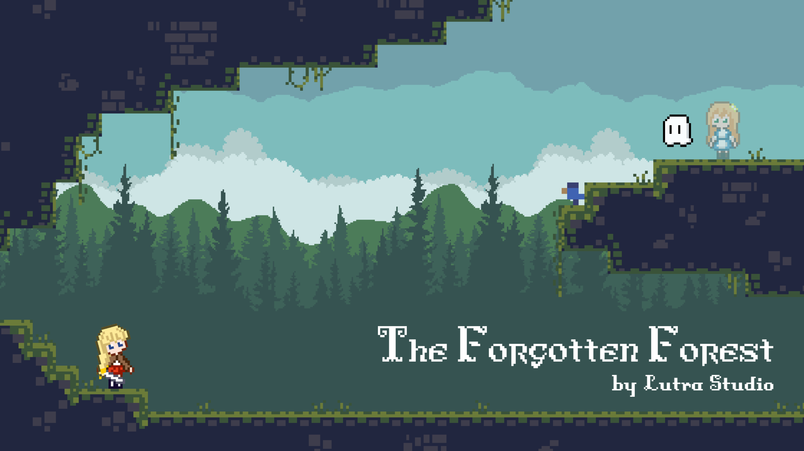
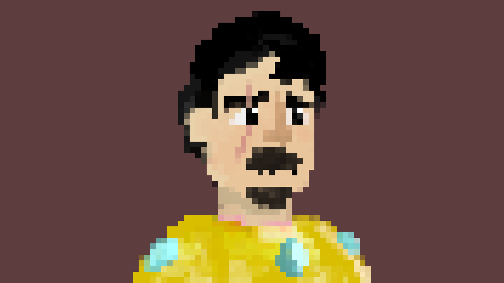

A miniature game engine that allows you to easily add dynamic light sources.
Technologies used in the implementation:
A two player platform game where players must work together and use their abilities wisely to overcome obstacles that neither could face alone.
I was in charge of implementing:
As well as:
Help this adventurer to escape the ancient castle!
I started from scratch to create the game, including designing, programming, and creating the arts.
In this custom level of Zelda, link has to navigate through the darkness to find a way out! All he has is a sword and a torch, can he make it out alive?
I was in charge of implementing:
A fighting game where you are fighting your grandchild! What will you do in this grandfather paradox?
I design and implemented UI/UX for the game.
A simple roll-a-ball where the little ghost is hungry and wants some burgers!
I designed and implemented a simple level for Roll-a-ball.